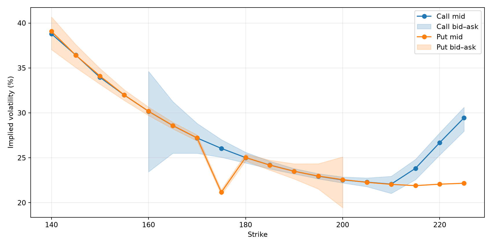
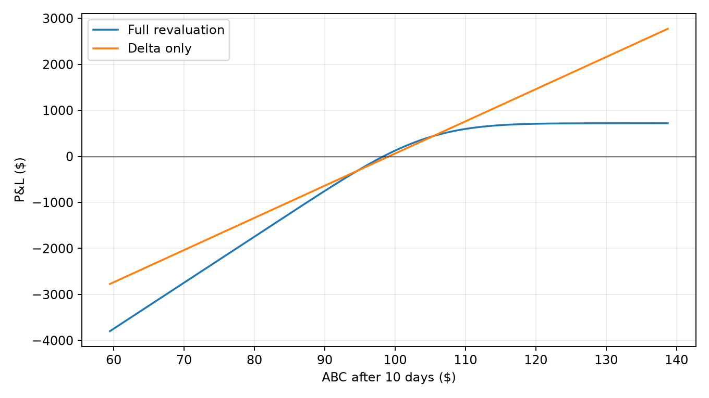
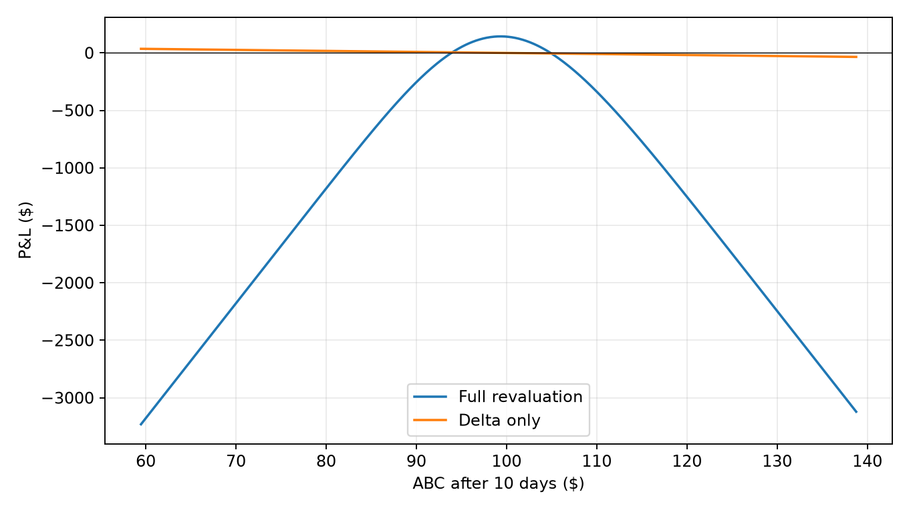
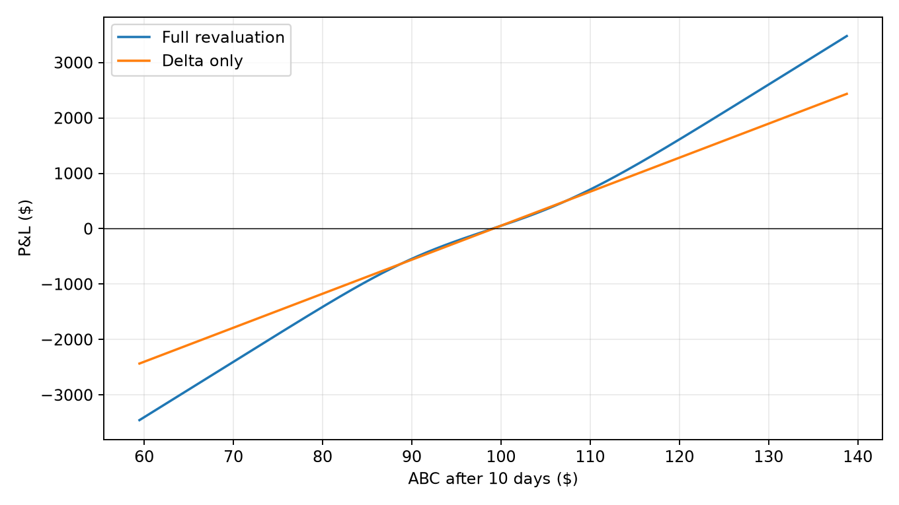
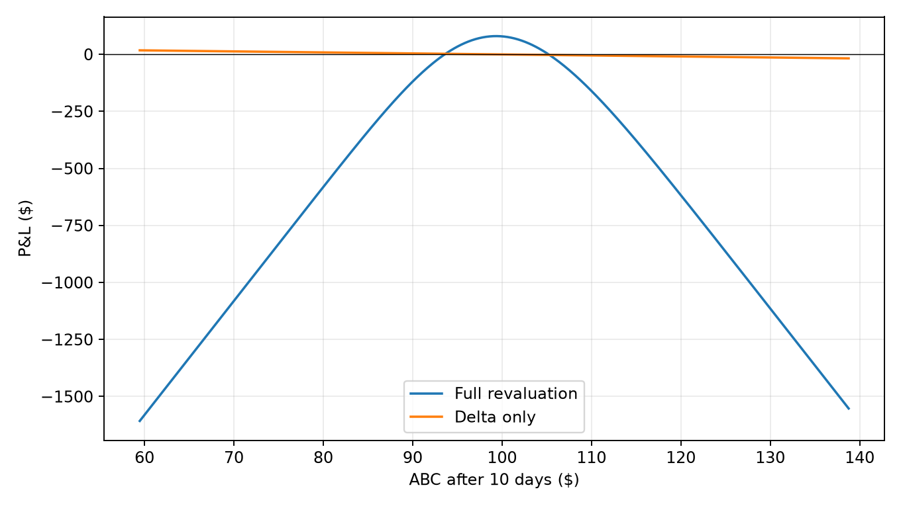
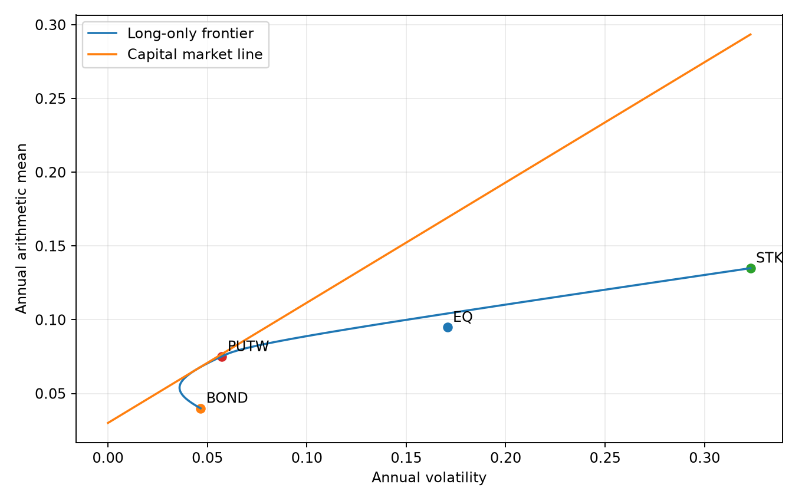

FinTech 545 · November 2026
All returns are arithmetic. VaR and ES are positive amounts for losses; a negative VaR means the relevant lower-tail quantile is a gain. Predictions below are based on the supplied quotes, positions, and descriptive statistics before model fitting. Sample standard deviations use the usual degrees-of-freedom correction.
Theoretical call minus put is S exp(−qT) − K exp(−rT). The table reports market call mid minus put mid minus this value; the comparison band is the sum of the two full quoted spreads. A positive gap means the call is expensive relative to the put. I expected an isolated bad quote to break parity, while a shared movement in call and put would be harder to flag. At a strike where parity holds and both prices have an implied volatility, strict monotonicity of each option price in volatility forces the call and put implied volatilities to agree.
| Strike | Parity gap ($) | Spread band ($) | Flag |
|---|---|---|---|
| 140 | -0.004 | 1.400 | |
| 145 | 0.000 | 1.250 | |
| 150 | -0.005 | 1.100 | |
| 155 | -0.000 | 0.950 | |
| 160 | -0.001 | 0.830 | |
| 165 | -0.001 | 0.690 | |
| 170 | -0.001 | 0.590 | |
| 175 | 0.888 | 0.470 | Yes |
| 180 | -0.002 | 0.430 | |
| 185 | 0.003 | 0.440 | |
| 190 | 0.002 | 0.460 | |
| 195 | -0.003 | 0.530 | |
| 200 | -0.003 | 0.650 | |
| 205 | 0.001 | 0.780 | |
| 210 | 0.001 | 0.920 | |
| 215 | 0.035 | 1.050 | |
| 220 | 0.060 | 1.200 | |
| 225 | 0.070 | 1.360 |
Only K = 175 is flagged: the 0.888 gap exceeds the 0.470 band. The gap is positive, so either the call is too expensive or the put is too cheap. Looking at the neighbouring quotes before fitting anything: the 175 put is bid/ask 1.66/1.76, barely above the 170 put at 1.50/1.60, even though a put $5 higher in strike and closer to the money should be worth noticeably more (the 180 put is 4.12/4.29). The 175 call, by contrast, sits smoothly between the 170 and 180 calls. My conclusion is that the 175 put quote is bad (most likely stale), and the 175 call is fine. A static trade would still need executable prices, financing, and settlement checked before calling it an arbitrage.
If parity holds at a strike, C − P equals S exp(−qT) − K exp(−rT), which does not depend on volatility. Both the call and the put are GBSM prices with the same S, K, T, r, and q, and GBSM satisfies parity for any single σ. Because each price is strictly increasing in σ, there is only one σ that matches the call and only one that matches the put, and parity forces them to be the same σ. So the call and put implied volatilities must be equal.
A price error ΔP maps to a vol error of roughly ΔP / vega. I therefore expect the least reliable implied volatilities where vega is small relative to the quoted spread: the far out-of-the-money wings (low-strike puts, high-strike calls) whose prices are a few cents, and the deep in-the-money options (low-strike calls, high-strike puts) whose prices are almost all intrinsic value. In the far call wing the 215, 220, and 225 calls are all quoted at the same 0.05/0.10, which already looks like a minimum-price floor rather than real information.
Each bid, mid, and ask is inverted separately with the generalized Black–Scholes–Merton formula, using 35 calendar days / 365. A dash means the price lies outside the admissible European price interval (or the upper-bound limit). Specifically, call bids at 140–155 and put bids at 205–225 lie below their discounted intrinsic lower bounds, so no nonnegative volatility can reproduce them. Vega is dollars per unit volatility; “cent effect” is the approximate change in volatility percentage points for a $0.01 price change.
| K | Call bid/mid/ask vol (%) | Put bid/mid/ask vol (%) | Call vega | Put vega | Cent effect C/P (vol pt) |
|---|---|---|---|---|---|
| 140 | —/38.8/56.5 | 37.0/39.1/40.7 | 1.63 | 1.69 | 0.61 / 0.59 |
| 145 | —/36.4/50.0 | 35.1/36.4/37.6 | 2.37 | 2.37 | 0.42 / 0.42 |
| 150 | —/34.0/43.9 | 33.2/34.1/34.9 | 3.39 | 3.44 | 0.29 / 0.29 |
| 155 | —/32.0/38.8 | 31.4/32.0/32.6 | 5.06 | 5.06 | 0.20 / 0.20 |
| 160 | 23.4/30.2/34.6 | 29.7/30.2/30.6 | 7.46 | 7.47 | 0.13 / 0.13 |
| 165 | 25.5/28.6/31.3 | 28.2/28.6/29.0 | 10.74 | 10.75 | 0.09 / 0.09 |
| 170 | 25.5/27.2/28.8 | 26.9/27.2/27.6 | 14.76 | 14.76 | 0.07 / 0.07 |
| 175 | 25.1/26.0/27.0 | 20.9/21.2/21.4 | 18.84 | 17.40 | 0.05 / 0.06 |
| 180 | 24.4/25.0/25.6 | 24.6/25.0/25.4 | 21.80 | 21.80 | 0.05 / 0.05 |
| 185 | 23.8/24.2/24.6 | 23.6/24.2/24.7 | 22.40 | 22.40 | 0.04 / 0.04 |
| 190 | 23.2/23.5/23.8 | 22.6/23.5/24.3 | 20.10 | 20.10 | 0.05 / 0.05 |
| 195 | 22.7/22.9/23.2 | 21.5/23.0/24.3 | 15.62 | 15.63 | 0.06 / 0.06 |
| 200 | 22.2/22.5/22.9 | 19.4/22.6/25.1 | 10.50 | 10.53 | 0.10 / 0.09 |
| 205 | 21.8/22.3/22.8 | —/22.3/26.9 | 6.19 | 6.17 | 0.16 / 0.16 |
| 210 | 21.0/22.1/22.9 | —/22.0/29.8 | 3.19 | 3.18 | 0.31 / 0.31 |
| 215 | 22.6/23.8/24.8 | —/21.9/33.6 | 2.26 | 1.46 | 0.44 / 0.68 |
| 220 | 25.3/26.7/27.8 | —/22.1/37.9 | 2.07 | 0.66 | 0.48 / 1.52 |
| 225 | 28.0/29.4/30.6 | —/22.2/42.4 | 1.93 | 0.27 | 0.52 / 3.68 |

At K = 175 the call–put mid volatility difference is 4.88 vol points. Dividing the parity gap by local vega gives approximately 4.71 points. The first-order conversion agrees to approximation; curvature makes it inexact. The flagged strike is clearly visible on the chart, and the plot confirms which side is wrong: the 175 put mid volatility is 21.2%, against 27.2% at 170 and 25.0% at 180, while the 175 call (26.0%) lies on the smooth curve. The put, not the call, is the bad quote.
Above 210, call mid volatility climbs from 23.82% at 215 to 29.45% at 225, while put volatility stays near 22.17%. This is a property of these quotes, not a statement about the market. The 215, 220, and 225 calls are all quoted at exactly 0.05/0.10: the price has hit a minimum-tick floor and stops falling as the strike rises, so the model has to raise volatility to keep the price constant. Vega makes this worse: at 225 one cent moves implied volatility by 0.52 points, so a 5-cent floor is worth several vol points. The bid and ask vols at 225 (28.0% to 30.6%) show how little the quote pins down. The call–put price gap in this wing stays inside the spread band, so the specified parity flag cannot detect it. Outside the bad strike and upper-call wing, volatility is higher on lower strikes and slopes down toward higher strikes, consistent with relatively strong demand for downside protection.
The Week 7 necessary condition compares each dividend with the interest cost of early payment of the strike. The thresholds are $0.892 at 0.10 years and $0.224 at 0.40 years. Thus $0.25 cannot justify early call exercise at the first date; $1.50 can at the second date for sufficiently high stock prices. Dividends should lower both calls and raise both puts. They should make call exercise more attractive before the second dividend and put exercise less attractive because the put benefits from waiting for the price drop.
The tree splits into a separate recombining subtree at every ex-dividend node. Exercise at an ex-dividend node uses the stock price immediately before the cash payment. The European spot adjustment uses S minus the present value of both dividends and is an approximation because it treats the remaining stock exposure differently.
| Type | Exercise | No dividend | With dividends: tree | With dividends: adjusted-spot GBSM |
|---|---|---|---|---|
| Call | European | 3.9223 | 3.1752 | 3.0723 |
| Call | American | 3.9176 | 3.4675 | — |
| Put | European | 4.3098 | 5.2849 | 5.1820 |
| Put | American | 4.4353 | 5.3711 | — |
| N | American call with dividends | American put with dividends |
|---|---|---|
| 100 | 3.47265 | 5.37932 |
| 105 | 3.46512 | 5.36824 |
| 150 | 3.46825 | 5.36932 |
| 155 | 3.47394 | 5.37573 |
| 200 | 3.46754 | 5.37114 |
| 205 | 3.46723 | 5.37283 |
| 300 | 3.46996 | 5.37208 |
| 305 | 3.46971 | 5.37066 |
The values do not converge monotonically. Neighbouring N give values that jump back and forth (call 3.4726 at N = 100 against 3.4651 at N = 105, but 3.4683 at 150 against 3.4739 at 155). The reason is where the strike falls relative to the terminal nodes: as N changes, the node closest to K moves from just above to just below the strike, so the discretized payoff changes and the price oscillates. The size of the swing shrinks as N grows: from N = 200 onward the call varies by under half a cent (3.4700 at 300, 3.4697 at 305). Averaging two neighbouring N is a cheap way to cancel most of the oscillation.
| Bump ($) | Call delta | Call gamma | Put delta | Put gamma |
|---|---|---|---|---|
| 1 | 0.50418 | 0.04591 | -0.54479 | 0.04135 |
| 0.1 | 0.50028 | 0.07862 | -0.56118 | 0.02105 |
| 0.01 | 0.50418 | 0.00458 | -0.56168 | 0.01783 |
| 0.001 | 0.50419 | 0.00000 | -0.56168 | 0.02239 |
| Option | ∂V/∂D₁ | ∂V/∂D₂ |
|---|---|---|
| Call european | -0.4259 | -0.3717 |
| Call american | -0.4838 | -0.0842 |
| Put european | 0.5696 | 0.6105 |
| Put american | 0.5760 | 0.6172 |
| Option | No-dividend exercise premium | With-dividend exercise premium |
|---|---|---|
| Call | 0.00000 | 0.29237 |
| Put | 0.13011 | 0.08628 |
Both predictions held. The call has no early-exercise premium without dividends and a premium of about 0.292 with them; the put premium falls from 0.130 to 0.086, because a put holder wants to wait for the price drop. Dividends lowered both calls and raised both puts. Just before the second dividend, exercising the call is optimal when S is above about $52.725. This is the price where exercising now (S − 50) equals holding a 0.1-year call on S − 1.50. That continuation value is computed with a separate 40-step CRR tree over the remaining 0.1 years and cross-checked with GBSM, which gives $52.717 (after the last dividend an American call equals a European call).
Gamma is the Greek that does not settle down. With N fixed, every terminal node is S₀ times a fixed factor (minus fixed dividends), and every payoff and exercise decision is a max of linear functions. So the tree value is a piecewise-linear function of S₀, with kinks wherever some node crosses the strike or the exercise boundary. A central second difference measures curvature. With a large bump it averages over many kinks and approximates the true gamma. With a tiny bump it lands either on a flat linear piece (gamma ≈ 0, as for the call at a $0.001 bump) or across a kink (a spike). Delta is a first difference of the same piecewise-linear function and stays stable. In practice, gamma from a tree should be taken from the tree nodes at step 2 or with a bump of at least one tree step.
Per dollar of dividend, the first dividend moves the American call about 5.7 times as much as the second (∂V/∂D₁ = -0.484, ∂V/∂D₂ = -0.084). Part (a) explains why. D₁ = $0.25 is below its $0.892 threshold, so exercising before it is never optimal and the holder cannot avoid it. Every dollar of D₁ lowers the stock price in every state, and the call loses roughly its delta per dollar (delta ≈ 0.50, measured sensitivity 0.48). D₂ = $1.50 is far above its $0.224 threshold. In the states where the call is deep in the money (S above about $52.72), the holder exercises just before D₂ and never bears it. D₂ only hurts the states where the call is held through the dividend, which are the states where the call is less valuable and has lower delta. For the European call, which cannot avoid either dividend, the two sensitivities are similar (-0.426 and -0.372).
| Book | Value ($) | Delta | Gamma | Theta ($/yr) | Flat-price 10-day P&L ($) |
|---|---|---|---|---|---|
| CoveredCall | 9,744.78 | 69.92 | -3.793 | 1,477.78 | 60.55 |
| ShortStraddle | -788.44 | -0.89 | -8.092 | 3,313.35 | 143.06 |
| RiskReversal | -65.79 | 61.39 | 0.536 | 18.59 | 3.73 |
| HedgedShortCall | 4,580.84 | -0.44 | -4.046 | 1,868.12 | 79.83 |
Greeks suggest the short straddle and hedged short call will have the largest delta-normal understatement: both have little first-order exposure but negative gamma and positive theta. The covered call retains substantial stock delta but also negative gamma, suggesting a smaller understatement; the risk reversal has positive gamma and substantial delta, suggesting a small overstatement. I rank the likely misstatement short straddle, hedged short call, covered call, then risk reversal. All four have positive initial theta, so I expect a gain if ABC does not move for ten days. For ES/VaR, I predict the short straddle and the hedged short call will be well above 1.25: they are short gamma with almost no delta, so the P&L is close to −½Γ(ΔS)², a one-sided distribution whose losses grow with the square of the move, giving a long left tail. The covered call and risk reversal are dominated by their delta, so their P&L is close to linear in ΔS and their ES/VaR should be close to the normal 1.25, raised a little by the fat tails of ABC returns.
From 500 arithmetic returns: mean 0.032%, sample standard deviation 1.667%, skewness 0.019, excess kurtosis 2.464. Normal MLE μ = 0.000321, σ = 0.016658, AICc = -2,671.93. Student t MLE df = 5.79, location = 0.000001, scale = 0.013506, AICc = -2,700.35. Lower AICc selects Student t. The location is set to zero for 10-day simulation as instructed; fitted scale and degrees of freedom remain fixed. Each scenario compounds ten independent daily returns and fully reprices options with 20 trading days left. There are 250,000 scenarios per law with fixed seeds.
| Book | Method | Mean P&L | VaR 5% | ES 5% | VaR 1% | ES 1% |
|---|---|---|---|---|---|---|
| CoveredCall | Delta normal | — | 600.45 | 752.99 | 849.23 | 972.93 |
| CoveredCall | normal | 6.71 | 676.00 | 869.88 | 989.36 | 1,145.35 |
| CoveredCall | student_t | 5.62 | 679.08 | 898.86 | 1,030.29 | 1,231.83 |
| ShortStraddle | Delta normal | — | 7.63 | 9.57 | 10.80 | 12.37 |
| ShortStraddle | normal | 20.41 | 314.51 | 481.08 | 586.75 | 740.10 |
| ShortStraddle | student_t | 19.74 | 324.01 | 522.68 | 643.40 | 850.62 |
| RiskReversal | Delta normal | — | 527.22 | 661.15 | 745.65 | 854.27 |
| RiskReversal | normal | 8.63 | 488.62 | 638.12 | 729.08 | 861.99 |
| RiskReversal | student_t | 7.88 | 490.84 | 662.58 | 762.64 | 938.85 |
| HedgedShortCall | Delta normal | — | 3.82 | 4.79 | 5.40 | 6.18 |
| HedgedShortCall | normal | 18.50 | 148.96 | 232.24 | 285.07 | 361.75 |
| HedgedShortCall | student_t | 18.17 | 153.71 | 253.04 | 313.40 | 417.01 |




Delta normal uses only δΔS, so it assigns nearly zero risk to the two almost delta-neutral short-option books. Adding ½Γ(ΔS)² + ΘΔt explains the direction and much of the scale, but cannot reproduce full revaluation exactly: gamma and theta change across large moves, and the payoff is asymmetric.
| Book | t full VaR 1% | t second-order VaR 1% | t full ES 1% | t second-order ES 1% |
|---|---|---|---|---|
| CoveredCall | 1,030.29 | 1,049.08 | 1,231.83 | 1,297.89 |
| ShortStraddle | 643.40 | 673.96 | 850.62 | 973.17 |
| RiskReversal | 762.64 | 694.95 | 938.85 | 804.09 |
| HedgedShortCall | 313.40 | 328.69 | 417.01 | 478.29 |
| Book | ES/VaR 5% normal | ES/VaR 5% t | Flat-price P&L | Simulated mean (t) | t vs normal: VaR 5% | VaR 1% | ES 1% |
|---|---|---|---|---|---|---|---|
| CoveredCall | 1.29 | 1.32 | 60.55 | 5.62 | 0.5% | 4.1% | 7.6% |
| ShortStraddle | 1.53 | 1.61 | 143.06 | 19.74 | 3.0% | 9.7% | 14.9% |
| RiskReversal | 1.31 | 1.35 | 3.73 | 7.88 | 0.5% | 4.6% | 8.9% |
| HedgedShortCall | 1.56 | 1.65 | 79.83 | 18.17 | 3.2% | 9.9% | 15.3% |
The ES/VaR prediction held. Under the t, the short straddle (1.61) and the hedged short call (1.65) are well above 1.25, while the two delta-dominated books stay much closer to it. The sign prediction also held: all four books gain if the price does not move. But the simulated mean is far smaller than the flat-price P&L for the short gamma books (short straddle: 143.06 if flat versus a mean of 19.74), because the theta gain is mostly offset by gamma losses whenever ABC moves. The positive mean that remains is the premium for selling convexity: it pays for the rare large losses in the left tail, as the ES numbers show. It is not a free return.
Switching from the normal to the t moves the deep-tail numbers of the short gamma books the most. For example, 1% ES rises 14.9% for the short straddle and 15.3% for the hedged short call. Their P&L is quadratic in ΔS, so the fatter tails of the t are amplified, and ES averages the whole tail beyond the quantile. The 5% VaR moves least (only 3.0% for the short straddle). A t fitted to the same data has a similar spread near the 5% quantile, because its lower scale compensates for its heavier tails there. The two laws mostly differ beyond that point.
A reply to the “flat” claim: “The hedge removes only the local stock delta; it does not remove negative gamma or time decay. A large price move over ten days can cause a substantial loss, especially in the tail.”
| Asset | Mean/mo | Std/mo | Skew | Excess kurtosis | Annual Sharpe | Sharpe without worst | Mean SE/mo | Worst month |
|---|---|---|---|---|---|---|---|---|
| EQ | 0.790% | 4.927% | -0.39 | 3.52 | 0.38 | 0.48 | 0.318% | -23.51% |
| BOND | 0.333% | 1.346% | 0.09 | 0.52 | 0.21 | 0.25 | 0.087% | -3.06% |
| STK | 1.124% | 9.327% | -0.06 | 0.81 | 0.32 | 0.40 | 0.602% | -37.67% |
| PUTW | 0.624% | 1.655% | -6.57 | 61.14 | 0.78 | 1.27 | 0.107% | -16.72% |
PUTW’s quiet months and unusually high Sharpe invite a large long-only tangency weight. My prediction: well over half the portfolio, roughly 60–80% PUTW, with most of the rest in BOND. PUTW has by far the highest Sharpe ratio and a low monthly standard deviation, and a mean–variance optimizer cannot see its crash risk. Its worst month and negative skew warn that the ratio is supported by collecting small gains while accepting occasional losses. The “without worst” column measures how strongly that one month pulls down each Sharpe estimate. I therefore expect the optimized portfolio’s historical 1% ES to be worse than a normal estimate with matching mean and variance.
| Portfolio | EQ | BOND | STK | PUTW | Annual Sharpe |
|---|---|---|---|---|---|
| unconstrained | -4.4% | 24.7% | 2.3% | 77.5% | 0.820 |
| long_only | 0.0% | 26.1% | 0.9% | 73.0% | 0.815 |
| putw_cap_20 | 14.6% | 63.6% | 1.8% | 20.0% | 0.590 |
Monthly portfolio returns are computed from the actual 240 months. Historical ES averages observations at or below the empirical quantile.
| Portfolio | Method | VaR 5% | ES 5% | VaR 1% | ES 1% |
|---|---|---|---|---|---|
| unconstrained | historical | 0.0022 | 0.0290 | 0.0349 | 0.0816 |
| unconstrained | normal | 0.0157 | 0.0211 | 0.0246 | 0.0290 |
| long_only | historical | 0.0025 | 0.0293 | 0.0360 | 0.0815 |
| long_only | normal | 0.0156 | 0.0210 | 0.0244 | 0.0288 |
| putw_cap_20 | historical | 0.0155 | 0.0284 | 0.0297 | 0.0501 |
| putw_cap_20 | normal | 0.0167 | 0.0221 | 0.0256 | 0.0300 |

CAPM for PUTW on EQ excess monthly return: alpha 0.274% per month, t = 3.05, beta = 0.185, R² = 0.303. In the 26 months when EQ excess return was below −5%, beta = 0.943 (SE 0.043).
The optimizer buys exposure to put-writing losses in exchange for a high average monthly premium. Sharpe compresses the return distribution to mean and standard deviation; it cannot distinguish a symmetric return from a negatively skewed one with the same two moments. ES averages the worst losses. Its coherence means monotonicity, cash translation, positive homogeneity, and subadditivity: losses cannot be made safer by worsening outcomes, adding cash shifts risk predictably, scaling scales risk, and diversification does not increase the sum of standalone tail risks. Those properties make portfolio tail exposure interpretable in a way that the mean–variance Sharpe ratio cannot provide. The single CAPM slope hides the state-dependent, much larger positive downside beta. Thus PUTW’s regression alpha is not evidence of skill by itself; it is partly compensation for crash insurance.
| Asset | Bootstrap long-only weight: 5% | Median | 95% |
|---|---|---|---|
| EQ | 0.0% | 0.0% | 13.0% |
| BOND | 0.0% | 20.7% | 70.5% |
| STK | 0.0% | 0.3% | 8.6% |
| PUTW | 24.4% | 75.5% | 99.4% |
Mean monthly standard errors above are material relative to expected excess returns. The bootstrap weight intervals show which optimized allocations survive sampling variability; weights that often fall to zero or vary widely are poor point estimates. A cap on PUTW is more defensible than relying on an unconstrained tangency weight inferred from this sample.
| Fund | Mean excess/day | Vol/day | Annual Sharpe | CAPM alpha/day | CAPM alpha t | Residual corr SMB | HML | Mom |
|---|---|---|---|---|---|---|---|---|
| FUND1 | 0.0624% | 1.175% | 0.84 | 0.0441% | 3.20 | -0.061 | 0.205 | 0.801 |
| FUND2 | 0.0338% | 0.719% | 0.75 | 0.0245% | 1.83 | 0.330 | -0.121 | 0.053 |
FUND1 initially looks more skilled because it has both the higher raw Sharpe and the larger CAPM alpha. Its CAPM residual is strongly correlated with momentum, which earned a positive sample premium, so I predict that adding momentum will sharply reduce its alpha. FUND2’s residual loads mainly on SMB; SMB’s sample premium is negative, so I predict that adding SMB will raise FUND2’s alpha. These are directional predictions, not significance tests.
Dates are inner-joined; Fama–French percentages are divided by 100. Ordinary least squares uses daily excess fund returns. AICc uses the number of regression coefficients including the intercept. Coefficients and standard errors are daily decimal units for the intercept and unitless for slopes.
| Model | Alpha (SE) | Market (SE) | SMB (SE) | HML (SE) | Mom (SE) | Alpha t | R² | AICc |
|---|---|---|---|---|---|---|---|---|
| CAPM | 0.000441 (0.000138) | 0.846890 (0.010900) | — | — | — | 3.20 | 0.828 | -9,814.4 |
| FF3 | 0.000296 (0.000131) | 1.001727 (0.017162) | 0.082782 (0.020500) | 0.334614 (0.028812) | — | 2.26 | 0.845 | -9,943.7 |
| Carhart4 | 0.000003 (0.000070) | 0.949160 (0.009166) | 0.000835 (0.010989) | 0.290728 (0.015329) | 0.393551 (0.006972) | 0.04 | 0.956 | -11,532.4 |
| Model | Alpha (SE) | Market (SE) | SMB (SE) | HML (SE) | Mom (SE) | Alpha t | R² | AICc |
|---|---|---|---|---|---|---|---|---|
| CAPM | 0.000245 (0.000133) | 0.428770 (0.010579) | — | — | — | 1.83 | 0.567 | -9,889.5 |
| FF3 | 0.000277 (0.000127) | 0.444303 (0.016564) | 0.210010 (0.019785) | -0.003800 (0.027807) | — | 2.19 | 0.615 | -10,033.0 |
| Carhart4 | 0.000273 (0.000127) | 0.443524 (0.016655) | 0.208796 (0.019966) | -0.004451 (0.027852) | 0.005834 (0.012668) | 2.15 | 0.615 | -10,031.2 |
| Fund | Expected annual no alpha | Expected annual with alpha | Realized annual | Mom shock loss on $10m | Loss / daily SD |
|---|---|---|---|---|---|
| FUND1 | 13.50% | 13.57% | 20.65% | 725,709 | 6.18 |
| FUND2 | 6.77% | 13.64% | 13.44% | 10,758 | 0.15 |
Expected returns use the latest ten years available in the factor files, ending 2024-09-30, with 252 daily trading days per year. The worst daily momentum factor realization was -18.44% on 1939-09-05. In the shock calculation, the market, SMB, HML, risk-free rate, and alpha are set to zero so it isolates the momentum beta; a negative “loss” denotes a gain.
FUND1: CAPM alpha 0.0441% per day moves to 0.0003% in the four-factor model. The nonmarket factor contribution at sample mean premia is 0.0416% per day; this explains the main direction of the alpha change, with market-beta re-estimation and correlations accounting for the remainder.
FUND2: CAPM alpha 0.0245% per day moves to 0.0273% in the four-factor model. The nonmarket factor contribution at sample mean premia is -0.0031% per day; this explains the main direction of the alpha change, with market-beta re-estimation and correlations accounting for the remainder.
In Arbitrage Pricing Theory, alpha is the intercept left after compensation for the specified factor exposures, so it is model-dependent. My opinion: FUND2 is the only plausible candidate for an alpha fee, conditional on fees, costs, and out-of-sample validation. Its FF3 alpha remains positive with a t statistic above two, while the four-factor model adds little for FUND2 by AICc; for FUND1 the four-factor model is clearly preferred and its alpha disappears. The realized five-year returns differ from projections based on a different ten-year factor window. This makes factor-based expected returns useful scenarios, but fragile single inputs for an optimizer, especially with uncertain premia and betas.
Pricing formulas, binomial backward induction, implied-volatility inversion, fitted laws, regressions, optimizations, simulation, and every displayed table are in analysis.py. Figures and this report are regenerated by the commands in README.md. Simulation and bootstrap seeds are fixed. Numerical values are rounded only for display; calculations use full precision.